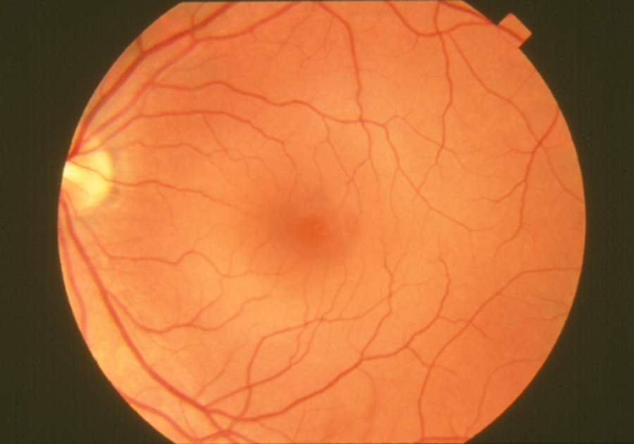

For years, labs have shown that a few genes can push old cells in mice back toward a more youthful state. This year that idea moved into people for the first time. A Boston biotech company, Life Biosciences, is testing a one-shot gene therapy called ER-100 in the eye, and it has now shared its first numbers.
The target is not ageing in general. The trial enrols adults with open-angle glaucoma, the most common form of the disease, in which the nerve cells that carry signals from the retina to the brain slowly die, and with NAION, a sudden loss of blood flow to the optic nerve sometimes called an eye stroke. Lost vision in both conditions is usually permanent.
Three genes and an antibiotic switch
ER-100 uses a harmless virus to deliver three genes, OCT4, SOX2 and KLF4, into the retinal ganglion cells whose long fibres make up the optic nerve. They are three of the four Yamanaka factors, which can turn adult cells all the way back into stem cells. The fourth, a gene linked to cancer, is left out, and the three are only switched on while the patient takes the antibiotic doxycycline, here for eight weeks. The goal is to reset the chemical tags on DNA that drift with age without erasing what the cell is.
The approach comes from David Sinclair's lab at Harvard Medical School. In a 2020 paper in Nature, his team reported that the same three genes restored lost vision in mice with a glaucoma-like condition and in elderly mice, and that the treated cells regained more youthful DNA tag patterns. Sinclair co-founded Life Biosciences, which licensed the therapy.

The US Food and Drug Administration cleared the trial in January, and the company announced in June that its first participant had been treated. The study is small by design: up to 12 people with glaucoma and up to six with NAION, each followed for years, with the main question being whether the treatment is safe.
What three patients can and cannot tell us
On 8 October the company reported interim results for the first three glaucoma patients, all on the lowest dose. Over 56 days there were no serious side effects and no problems it attributed to ER-100 itself; the side effects seen were put down to the injection, the steroid given alongside it or existing conditions. In two of the three, at least 28% of the points on a standard visual field test improved by more than 4 decibels. An independent safety board has approved moving to a higher dose.
Those vision numbers need care. They come from a company release, not a peer-reviewed paper. The trial has no placebo group, everyone knows they were treated, and visual field scores can swing from one test to the next. Three people cannot show whether ER-100 works, and nothing in the data shows that a person, or even a whole eye, has been made biologically younger.
"The technology is still really early, and the potential for catastrophic side effects is high." (Matt Kaeberlein, Optispan, via Nature)
The main fear is that pushing cells toward a stem-cell-like state could tip some into growing out of control, as early mouse experiments with all four factors did. Other scientists point out that ER-100 does nothing about the high eye pressure that drives glaucoma, so any benefit might fade. If the safety picture holds as doses rise and more patients join, the result would still be a first step for one eye disease, not a treatment for ageing.